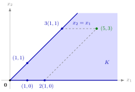

Convex Cone¶
Definition¶
Let be a nonempty set. is a convex cone if it is a cone and a convex set. Equivalently (Example 1 below), is a convex cone if and only if
A linear combination of points is a nonnegative linear combination if for all .
Interpretation¶
A convex cone is a set that is closed under adding its points and under stretching them by nonnegative factors. It behaves like a subspace in which only nonnegative multipliers are allowed.

The figure shows Example 2 below. The sector contains and ; stretching gives and , still in , and adding them completes the dashed parallelogram at , which satisfies . Every nonnegative combination of points of is reached by such stretching and adding, which is the third Key Result below in a picture.
The two descriptions in the definition agree for a simple reason. If is a convex cone, then is a stretched midpoint and lies in . Conversely, a convex combination is the sum of two stretched points. Both conditions are needed: two half-lines in different directions form a cone that is not closed under addition, and is convex and closed under addition but is not a cone (Example 3 below). Just as a convex set contains all convex combinations of its points, a convex cone contains all nonnegative linear combinations of its points, with no condition that the weights add up to one.
The three notions line up with Math II. A subspace contains all linear combinations of its points, a convex cone all nonnegative ones, and a convex set all convex ones. So every subspace is a convex cone, and every convex cone is a convex set. As with convex sets, intersections of convex cones are convex cones, while unions in general are not.
A convex cone need not be closed, and it may contain a whole line, as every subspace other than does. Convex cones generated by finitely many points, described later this week, are the ones met most often; in Week 5 they return in Farkas' lemma.
Key Results¶
- For nonempty : is a convex cone and for all and (proved in Example 1 below).
- Equivalently, for all and .
- is a convex cone every nonnegative linear combination of points of belongs to .
- If is a convex cone for every , then is a convex cone; the same argument (sums and nonnegative multiples of points in every stay in every ) works for an arbitrary collection of convex cones.
- For , the nonnegative multiples of form the convex cone , the half-line from through .
Examples¶
1. Proof of the sum-and-scaling description. Let be a convex cone and . By convexity , and since is a cone, ; holds by definition. Conversely, if is closed under addition and nonnegative scaling, it is a cone, and for the points and lie in , hence so does their sum . So is convex.
2. A sector as an intersection. is the intersection of and . Each is a closed halfspace whose boundary passes through , hence a convex cone, so is a convex cone because intersections of convex cones are convex cones. By the third Key Result above it contains every nonnegative linear combination of its points: from we get , and indeed .
3. Each condition is needed. The union of the half-lines through and is a cone, but , so it is not a convex cone. The interval is convex and closed under addition ( gives ), but , so it is not a cone. The union of the two convex cones and in (the two axes) is a cone but not convex.
4. Matrices. For , call a convex cone if it is convex and closed under multiplication by . The proof in Example 1 above works word for word: . For instance the matrices with all entries nonnegative form such a : entrywise, nonnegative entries stay nonnegative under sums and nonnegative multiples.
Prerequisites¶
Related Concepts¶
Sources¶
- Math VI: Convexity and Optimization · Week 2
- H. E. Nusse and M. Dienstknecht, Math VI: Convexity and Optimization, lecture notes 2026–2027, Section 2.3
Aliases: nonnegative linear combination, conic combination Keywords: \boldsymbol{x}+\boldsymbol{y}\in K, \lambda\boldsymbol{x}+\mu\boldsymbol{y}\in K, \sum_{i=1}^{m}\lambda_i\boldsymbol{x}_i,\ \lambda_i\geq0, closed under addition and nonnegative scaling, intersection of convex cones Symbols: element of, infinity, lambda, mu, natural numbers, real numbers, subset, sum
Last updated: 5 November 2026 12:47
Convex ConeFinitely Generated Convex ConeNormal ConePolar ConePolyhedral Convex ConeConeConvex CombinationIntersection and Sum of Convex SetsConvex Set in R^nLinear CombinationFarkas' LemmaSubspace